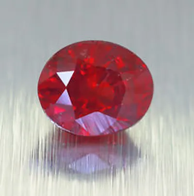

星光藍寶與貓眼：剛玉界的特異功能
星光藍寶有六道芒、貓眼有一道光帶——剛玉家族的特異功能，都來自體內排隊的針狀內含物。

核心定義
星光效應（asterism）與貓眼效應（chatoyancy）是寶石界的兩大「特異功能」。星光藍寶石在弧面切磨下浮現六道星芒；貓眼效應則是一道隨角度移動的光帶。剛玉家族兩者都有——星光藍寶/紅寶是名角，貓眼剛玉則罕見得多。
兩者的共通根源是「定向內含物」：星光需要三組互成 60° 的針狀內含物（金紅石針），貓眼只需要一組平行排列的針狀內含物或管狀物——內含物的排列方式，決定了寶石的「特異功能」種類。
特徵與分類
| 現象 | 內含物要求 | 表現 | 代表寶石 |
|---|---|---|---|
| 星光（六道） | 三組 60° 針晶 | 六道星芒、隨光源移動 | 星光藍寶/紅寶 |
| 貓眼（一道） | 單組平行針晶/管 | 一道光帶、會「開合」 | 貓眼剛玉（極罕見） |
| 星光（十二道） | 雙重內含物系統 | 十二道星芒 | 極罕見 |
星光藍寶是斯里蘭卡的招牌（當地稱「國石」），星光紅寶以緬甸為貴。貓眼剛玉極其稀少，市場上多數「貓眼」其實是貓眼金綠寶石或貓眼石英——剛玉貓眼因為太稀罕，收藏價值極高。
科學原理
星光與貓眼的物理都是「定向反射」：光線垂直照射弧面時，沿針晶方向排列的反射面把光集中成光帶。三組針晶＝三條光帶交叉＝六道星芒；一組針晶＝一道光帶＝貓眼。針晶越細密均勻，光帶越銳利。
「貓眼開合」的視覺：轉動寶石時，光帶像貓瞳一樣「張合」——這是光帶位置與針晶平面的幾何關係，也是貓眼效應最迷人的動態美。
鑑定與鑑別方法
- 單點光源暗室測試：星光六道是否完整、貓眼光帶是否銳利
- 看光帶「滑動」：真星光/貓眼隨光源流動，假的不會
- 顯微鏡確認針晶定向排列
- 警惕「畫星」與「雷射刻線」假貓眼
- 檢查底色與星芒品質：細密均勻為佳
市場行情與保養建議
星光藍寶與星光紅寶是收藏級品項：星芒完整、底色漂亮的斯里蘭卡星光藍寶行情穩健；緬甸星光紅寶稀有度高。貓眼剛玉極罕見，可遇不可求，多在藏家圈流通。
選購三看：星芒/光帶完整性、針晶細密均勻度、底色美感。星光寶石的「淨度」標準不同於刻面寶石——它的價值在特效，不在通透。
常見誤區
貓眼是「效應」不是「寶石種」。金綠寶石貓眼最貴，但石英、剛玉、磷灰石等也能出貓眼。市場說「貓眼」多指金綠寶，但剛玉貓眼更稀罕——別混淆。
星光寶石靠針晶吃飯，用淨度標準衡量是錯配。它的「乾淨」指的是底色勻淨、針晶細密，而不是「沒有內含物」。
冷知識
當寶石同時有金紅石針與赤鐵礦針兩套內含物系統，會織出十二道星芒——這種「十二芒」極罕見，是藏家追捧的異數。
轉動寶石時光帶張合，古人覺得像活物——特異功能寶石自古就帶著神秘色彩，不是現代才有的浪漫。
反直覺觀點
針狀內含物越多越密，星光越美——與刻面寶石追求「無瑕」完全相反。同一個特徵，在兩套美學體系裡，一個是瑕疵、一個是靈魂。
它沒有濃豔的藍或紅，顏色常是灰藍、棕或無色——但正因效應稀有，樸素外表下的價值遠超色彩豔麗的普通藍寶。